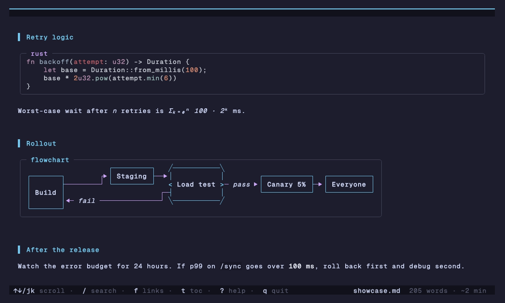
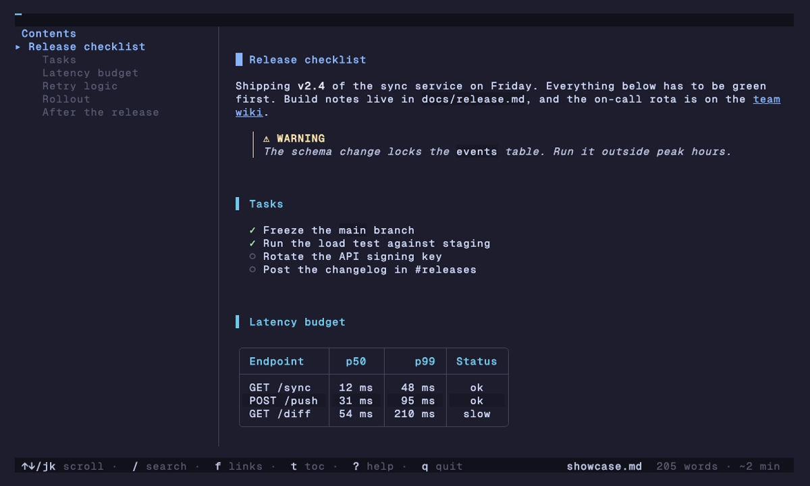
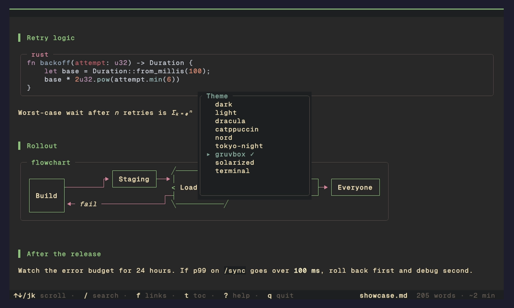
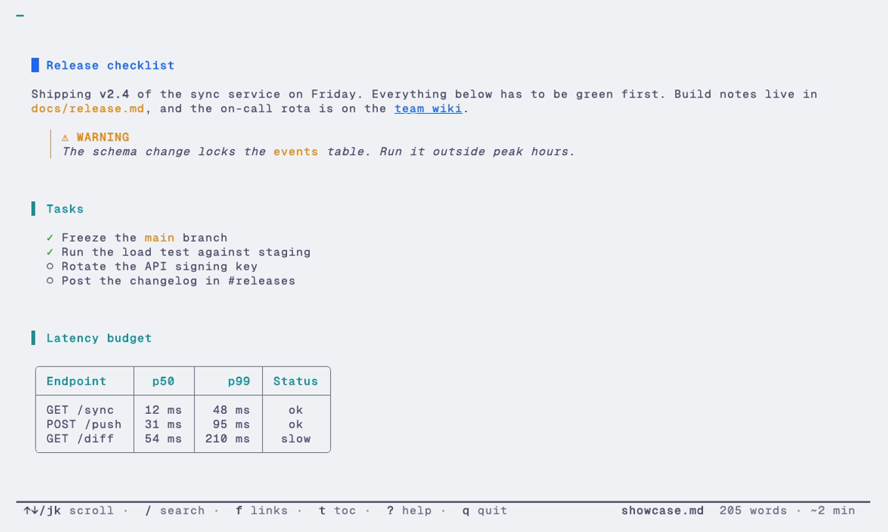
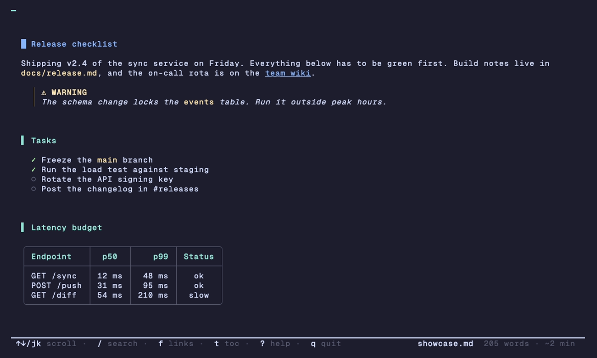

New in 0.11: the terminal theme macOS · Linux · Windows
Markdown, properly typeset in your terminal.
ink renders code, tables, images, diagrams and math in a fast reader with search, tabs and a table of contents. It pages like bat when you pipe it. One binary, no dependencies.
curl -fsSL https://raw.githubusercontent.com/borghei/ink/main/install.sh | sh
brew tap borghei/tap && brew trust borghei/tap && brew install ink
cargo install ink-md
irm https://raw.githubusercontent.com/borghei/ink/main/install.ps1 | iex
Scoop, conda, mise, .deb, .rpm and prebuilt binaries: every way to install.
- 1
- binary, nothing else to install
- 9
- themes, plus any you write
- 9
- prebuilt targets, Raspberry Pi included
- 0
- network calls unless you ask
Diagrams and math
Boxes, arrows and equations, drawn in text.
Mermaid flowcharts, state, class and ER diagrams come out as real boxes and routed arrows, sized to your window. Gantt charts get a time axis, mindmaps a tree.
LaTeX turns into Unicode you can read: \sqrt{b^2-4ac} is √(b² - 4ac). No browser, no plugins, no external tools.

Built for long documents
Find your place, keep your place.
A table of contents follows you as you scroll. Search highlights as you type. Every link on screen gets a letter, so you never reach for the mouse.
- toShow the contents, then filter, fold and jump
- /nSearch and step through matches
- fOpen or follow any link by its letter
- cYCopy a code block or a whole section as markdown
- eEdit in
$EDITORat the section you're reading

Themes
Your colors, or nine of ours.
Press T and every theme previews live. The new terminal theme borrows your terminal's own palette, so the same setting fits light and dark setups.
Writing your own takes one TOML file. Colors can be hex, palette slots like ansi:blue, or default.



Pager mode
A pager when you pipe it.
ink --plain pages long files like bat and prints clean text into pipes, so it drops into fzf previews, git diffs and scripts.
Pull out just the lines you need with --line-range. Code blocks cut in half stay highlighted.
# preview markdown in fzf $ fzf --preview 'ink --plain --color=always {}' # readable markdown in git diffs $ git config --global diff.markdown.textconv "ink --plain" # just lines 40 to 80 of the source $ ink --line-range 40:80 README.md # read a README straight from the web $ ink https://raw.githubusercontent.com/borghei/ink/main/README.md
And the rest
The details you'd expect, and some you wouldn't.
- Inline images
- Real pixels on Kitty, iTerm2, WezTerm, Ghostty and Sixel. Half-blocks everywhere else. SVG too.
- Select and copy
- Keyboard or mouse selection that knows where a code block ends. Works over SSH and tmux.
- Admonitions
- GitHub
[!NOTE]blocks with icons, custom titles and Obsidian callouts. - Tabs and a file browser
- Open several files at once, or run
ink .and pick from a filterable list. - Watch mode
- Re-renders within 100 ms of a save and keeps your scroll position.
- Slides
ink --slides deck.mdsplits on---. Arrow keys to move.- Frontmatter and wikilinks
- YAML and TOML hidden or shown as a box.
[[page]]links for Obsidian vaults. - Your keys
- Vim-flavored by default, an emacs preset, and per-action overrides with chords.
- Safe by default
- Escape sequences are stripped and remote images stay off, so an untrusted file can't phone home.
- jk scroll
- Space page
- / search
- t contents
- f links
- T themes
- ? every key
- q quit
Compared
How ink stacks up.
| Feature | ink | glow | mdcat | frogmouth |
|---|---|---|---|---|
| Interactive reader | Yes | Yes | No | Yes |
| Search in a document | Yes | No | No | No |
| Table of contents | Yes | No | No | Yes |
| Tabs | Yes | No | No | No |
| Inline images | Yes | No | Yes | No |
| Mermaid diagrams | Yes | No | No | No |
| Math and emoji | Yes | No | No | No |
| Watch mode | Yes | No | No | No |
| Presentation mode | Yes | No | No | No |
| Pager mode | Yes | Yes | No | No |
| Built-in themes | 9 | 2 | 0 | 0 |
| Single binary | Yes | Yes | Yes | No |
Documentation
Read the manual.
- InstallEvery install route, binaries, verifying downloads
- FeaturesEverything ink renders and every reader feature
- Themes and colorBuilt-in themes, the terminal theme, custom themes
- ConfigurationSettings, keybindings, vim and emacs presets
- Command lineFlags, subcommands, pager use, recipes
- Troubleshooting
ink doctor, images, colors, clipboard, security
Stop reading raw markdown like a caveman.
curl -fsSL https://raw.githubusercontent.com/borghei/ink/main/install.sh | sh
brew tap borghei/tap && brew trust borghei/tap && brew install ink
cargo install ink-md
irm https://raw.githubusercontent.com/borghei/ink/main/install.ps1 | iex